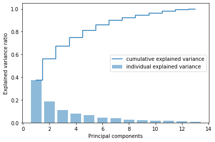
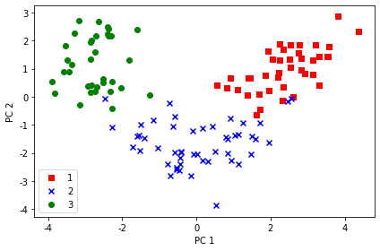
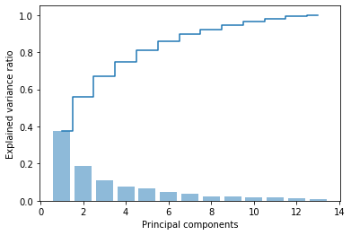
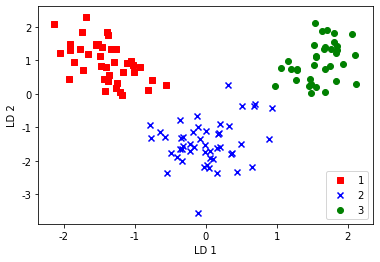

## ex13_1 PCA算法实现步骤
import os
import pandas as pd
import numpy as np
os.chdir(r'C:\Users\43790\data file')
from sklearn.model_selection import train_test_split
df_wine = pd.read_csv('wine.data', header=None)
df_wine.columns = ['Class label', 'Alcohol', 'Malic acid', 'Ash',
'Alcalinity of ash', 'Magnesium', 'Total phenols',
'Flavanoids', 'Nonflavanoid phenols', 'Proanthocyanins',
'Color intensity', 'Hue', 'OD280/OD315 of diluted wines', 'Proline']
df_wine.head()
X, y = df_wine.iloc[:, 1:].values, df_wine.iloc[:, 0].values
X_train, X_test, y_train, y_test = \
train_test_split(X, y, test_size=0.3, random_state=0)
## 标准化
from sklearn.preprocessing import StandardScaler
sc = StandardScaler()
X_train_std = sc.fit_transform(X_train)
X_test_std = sc.transform(X_test)
## 利用Numpy的linalg.eig()获得协方差矩阵的特征向量和特征值
import numpy as np
cov_mat = np.cov(X_train_std.T)
eigen_vals, eigen_vecs = np.linalg.eig(cov_mat) ## eigen_vecs 13*13
print('Eigenvalues \n %s' % eigen_vals)
print('eigen_vecss \n %s' % eigen_vecs)Eigenvalues
[4.8923083 2.46635032 1.42809973 1.01233462 0.84906459 0.60181514
0.52251546 0.08414846 0.33051429 0.29595018 0.16831254 0.21432212
0.2399553 ]
eigen_vecss
[[ 1.46698114e-01 5.04170789e-01 -1.17235150e-01 2.06254611e-01
-1.87815947e-01 -1.48851318e-01 -1.79263662e-01 -5.54687162e-02
-4.03054922e-01 -4.17197583e-01 2.75660860e-01 4.03567189e-01
4.13320786e-04]
[-2.42245536e-01 2.42168894e-01 1.49946576e-01 1.30489298e-01
5.68639776e-01 -2.69052764e-01 -5.92636731e-01 3.32731614e-02
-1.01833706e-01 2.17101488e-01 -8.13845005e-02 -1.52474999e-01
-8.78560762e-02]
[-2.99344215e-02 2.86984836e-01 6.56394387e-01 1.51536318e-02
-2.99209426e-01 -9.33386061e-02 6.07334578e-02 -1.00618575e-01
3.51841423e-01 1.28549846e-01 -1.29751275e-02 1.68376064e-01
-4.52518598e-01]
[-2.55190023e-01 -6.46871827e-02 5.84282337e-01 -9.04220851e-02
-4.12499478e-02 -1.01342392e-01 2.50323869e-01 5.61658566e-02
-5.00457282e-01 4.73344124e-02 9.89088030e-02 -6.70902926e-02
4.86169765e-01]
[ 1.20797723e-01 2.29953850e-01 8.22627466e-02 -8.39128346e-01
-2.71971315e-02 1.12567350e-01 -2.85240559e-01 9.58423947e-02
8.37391743e-02 -2.78918776e-01 -9.59297663e-02 -1.02396856e-01
1.14764951e-01]
[ 3.89344551e-01 9.36399132e-02 1.80804417e-01 1.93179478e-01
1.40645426e-01 1.22248798e-02 5.31455344e-02 -4.21265116e-01
1.35111456e-01 -2.80985650e-01 2.83897644e-01 -6.18600153e-01
9.45645138e-02]
[ 4.23264856e-01 1.08862204e-02 1.42959330e-01 1.40459548e-01
9.26866486e-02 -5.50345182e-02 7.98994076e-02 8.47224703e-01
3.36016514e-03 -3.91442963e-02 1.16729207e-01 -1.39680277e-01
-1.00444099e-01]
[-3.06349555e-01 1.87021637e-02 1.72234753e-01 3.37332618e-01
-8.58416771e-02 6.95340883e-01 -2.97371718e-01 1.66256803e-01
1.90120758e-01 -2.78622194e-01 -3.96566280e-02 1.63323514e-03
2.00128778e-01]
[ 3.05722194e-01 3.04035180e-02 1.58362102e-01 -1.14752900e-01
5.65105241e-01 4.98354410e-01 2.02519133e-01 -1.66197468e-01
-1.76029939e-01 1.48539457e-01 8.60602743e-02 3.88568490e-01
-1.39942067e-01]
[-9.86919131e-02 5.45270809e-01 -1.42421708e-01 7.87857057e-02
1.32346052e-02 1.59452160e-01 3.97364107e-01 3.96173606e-02
-2.14930670e-01 -4.10240865e-03 -5.71651893e-01 -3.08345904e-01
-1.15349466e-01]
[ 3.00325353e-01 -2.79243218e-01 9.32387182e-02 2.41740256e-02
-3.72610811e-01 2.16515349e-01 -3.84654748e-01 -1.05383688e-01
-5.17259438e-01 1.97814118e-01 -1.98844532e-01 -2.00456386e-01
-3.02254353e-01]
[ 3.68211538e-01 -1.74365000e-01 1.96077407e-01 1.84028641e-01
8.93796748e-02 -2.35172361e-01 -8.62903341e-02 -9.95055559e-02
1.36456039e-01 -2.38138151e-01 -6.50869713e-01 2.84100327e-01
3.18414303e-01]
[ 2.92597130e-01 3.63154608e-01 -9.73171134e-02 5.67677845e-02
-2.17529485e-01 1.05621383e-01 -1.30298291e-01 -1.60661776e-02
1.67758429e-01 6.37350206e-01 7.12377082e-02 3.75546771e-02
5.03247839e-01]]tot = sum(eigen_vals)
var_exp = [(i / tot) for i in sorted(eigen_vals, reverse=True)]
cum_var_exp = np.cumsum(var_exp) # cumulative sum of explained variance
# plot variance
import matplotlib.pyplot as plt
%matplotlib inline
plt.bar(range(1, 14), var_exp, alpha=0.5, align='center',
label='individual explained variance')
plt.step(range(1, 14), cum_var_exp, where='mid',
label='cumulative explained variance')
plt.ylabel('Explained variance ratio')
plt.xlabel('Principal components')
plt.legend(loc='best')
plt.tight_layout()

eigen_pairs = [(np.abs(eigen_vals[i]), eigen_vecs[:,i]) for i in range(len(eigen_vals))]
# Sort the (eigenvalue, eigenvector) tuples from high to low
eigen_pairs.sort(reverse=True)
## 选择两个最大特征值的特征向量。实践中，要通过在计算效率和分类器性能之间的平衡来确定
w = np.column_stack([eigen_pairs[0][1], eigen_pairs[1][1]]) ## 创建了一个13*2维的投影矩阵W
print(w)
[[ 0.14669811 0.50417079]
[-0.24224554 0.24216889]
[-0.02993442 0.28698484]
[-0.25519002 -0.06468718]
[ 0.12079772 0.22995385]
[ 0.38934455 0.09363991]
[ 0.42326486 0.01088622]
[-0.30634956 0.01870216]
[ 0.30572219 0.03040352]
[-0.09869191 0.54527081]
[ 0.30032535 -0.27924322]
[ 0.36821154 -0.174365 ]
[ 0.29259713 0.36315461]]# 通过计算矩阵点积，将 整个 124×13-dimensional 维训练集转换为两个主成分
X_train_pca = X_train_std.dot(w)
colors = ['r', 'b', 'g']
markers = ['s', 'x', 'o']
for l, c, m in zip(np.unique(y_train), colors, markers):
plt.scatter(X_train_pca[y_train==l, 0],
X_train_pca[y_train==l, 1],
c=c, label=l, marker=m)
plt.rcParams['axes.unicode_minus'] = False
plt.xlabel('PC 1')
plt.ylabel('PC 2')
plt.legend(loc='lower left')
plt.tight_layout()

## ex13_2
from sklearn.decomposition import PCA
pca = PCA()
X_train_pca = pca.fit_transform(X_train_std)
pca.explained_variance_ratio_
array([0.37329648, 0.18818926, 0.10896791, 0.07724389, 0.06478595,
0.04592014, 0.03986936, 0.02521914, 0.02258181, 0.01830924,
0.01635336, 0.01284271, 0.00642076])import matplotlib.pyplot as plt
plt.bar(range(1, 14), pca.explained_variance_ratio_, alpha=0.5, align='center')
plt.step(range(1, 14), np.cumsum(pca.explained_variance_ratio_), where='mid')
plt.ylabel('Explained variance ratio')
plt.xlabel('Principal components')
Text(0.5, 0, 'Principal components')
import warnings
warnings.filterwarnings("ignore")
from matplotlib.colors import ListedColormap
def plot_decision_regions(X, y, classifier, resolution=0.02):
# setup marker generator and color map
markers = ('s', 'x', 'o', '^', 'v')
colors = ('red', 'blue', 'lightgreen', 'gray', 'cyan')
cmap = ListedColormap(colors[:len(np.unique(y))])
# plot the decision surface
x1_min, x1_max = X[:, 0].min() - 1, X[:, 0].max() + 1
x2_min, x2_max = X[:, 1].min() - 1, X[:, 1].max() + 1
xx1, xx2 = np.meshgrid(np.arange(x1_min, x1_max, resolution),
np.arange(x2_min, x2_max, resolution))
Z = classifier.predict(np.array([xx1.ravel(), xx2.ravel()]).T)
Z = Z.reshape(xx1.shape)
plt.contourf(xx1, xx2, Z, alpha=0.4, cmap=cmap)
plt.xlim(xx1.min(), xx1.max())
plt.ylim(xx2.min(), xx2.max())
# plot class samples
for idx, cl in enumerate(np.unique(y)):
plt.scatter(x=X[y == cl, 0], y=X[y == cl, 1],
alpha=0.8, c=cmap(idx),
marker=markers[idx], label=cl)
## 训练集上的决策边界
from sklearn.linear_model import LogisticRegression
lr = LogisticRegression()
lr = lr.fit(X_train_pca, y_train)
plot_decision_regions(X_train_pca, y_train, classifier=lr)
plt.xlabel('PC 1')
plt.ylabel('PC 2')
plt.legend(loc='lower left')
plt.tight_layout()
---------------------------------------------------------------------------
ValueError Traceback (most recent call last)
<ipython-input-19-fe3a9f8a8303> in <module>
34 lr = lr.fit(X_train_pca, y_train)
35
---> 36 plot_decision_regions(X_train_pca, y_train, classifier=lr)
37 plt.xlabel('PC 1')
38 plt.ylabel('PC 2')
<ipython-input-19-fe3a9f8a8303> in plot_decision_regions(X, y, classifier, resolution)
16 xx1, xx2 = np.meshgrid(np.arange(x1_min, x1_max, resolution),
17 np.arange(x2_min, x2_max, resolution))
---> 18 Z = classifier.predict(np.array([xx1.ravel(), xx2.ravel()]).T)
19 Z = Z.reshape(xx1.shape)
20 plt.contourf(xx1, xx2, Z, alpha=0.4, cmap=cmap)
~\Anaconda3\lib\site-packages\sklearn\linear_model\base.py in predict(self, X)
287 Predicted class label per sample.
288 """
--> 289 scores = self.decision_function(X)
290 if len(scores.shape) == 1:
291 indices = (scores > 0).astype(np.int)
~\Anaconda3\lib\site-packages\sklearn\linear_model\base.py in decision_function(self, X)
268 if X.shape[1] != n_features:
269 raise ValueError("X has %d features per sample; expecting %d"
--> 270 % (X.shape[1], n_features))
271
272 scores = safe_sparse_dot(X, self.coef_.T,
ValueError: X has 2 features per sample; expecting 13import numpy as np
## 3.2 产生均值向量
np.set_printoptions(precision=4)
mean_vecs = []
for label in range(1,4):
mean_vecs.append(np.mean(
X_train_std[y_train==label], axis=0))
print('MV %s: %s\n' %(label, mean_vecs[label-1]))
MV 1: [ 0.9259 -0.3091 0.2592 -0.7989 0.3039 0.9608 1.0515 -0.6306 0.5354
0.2209 0.4855 0.798 1.2017]
MV 2: [-0.8727 -0.3854 -0.4437 0.2481 -0.2409 -0.1059 0.0187 -0.0164 0.1095
-0.8796 0.4392 0.2776 -0.7016]
MV 3: [ 0.1637 0.8929 0.3249 0.5658 -0.01 -0.9499 -1.228 0.7436 -0.7652
0.979 -1.1698 -1.3007 -0.3912]## 计算类内散布矩阵(协方差矩阵) S_w
d = 13
S_W = np.zeros((d,d))
for label, mv in zip(range(1,4), mean_vecs):
class_scatter = np.cov(X_train_std[y_train==label].T)
S_W += class_scatter
print("Scaled within-class scatter matrix: %s*%s" % (S_W.shape[0], S_W.shape[1]))
## 计算类间散布矩阵S_B
mean_overall = np.mean(X_train_std, axis=0)
d = 13
S_B = np.zeros((d,d))
for i, mean_vec in enumerate(mean_vecs):
n = X_train[y_train == i + 1,:].shape[0]
mean_vec = mean_vec.reshape(d,1)
mean_overall = mean_overall.reshape(d,1)
S_B += n * (mean_vec - mean_overall).dot(
(mean_vec - mean_overall).T)
print('Between-class scatter matrix: %s*%s' % (
S_B.shape[0], S_B.shape[1]))
Scaled within-class scatter matrix: 13*13
Between-class scatter matrix: 13*13## 3.4 求解矩阵Sw-1Sb的广义特征值
eigen_vals, eigen_vecs = np.linalg.eig(np.linalg.inv(S_W).dot(S_B))
## 3.5 按降序对特征值排序
eigen_pairs = [(np.abs(eigen_vals[i]), eigen_vecs[:,i])
for i in range(len(eigen_vals))]
eigen_pairs = sorted(eigen_pairs, key=lambda k:k[0], reverse=True)
print('Eigenvalues in descending order:\n')
for item in eigen_pairs:
print(item[0])
Eigenvalues in descending order:
452.72158124497435
156.43636121952323
1.0564670343472254e-13
3.996418537019543e-14
3.409235652909593e-14
2.842170943040401e-14
1.4793035293048285e-14
1.4793035293048285e-14
1.3494134504023504e-14
1.3494134504023504e-14
6.491059855852737e-15
6.491059855852737e-15
2.655812157040677e-15##创建投影矩阵
w = np.hstack((eigen_pairs[0][1].real[:, np.newaxis],
eigen_pairs[1][1].real[:, np.newaxis]))
print('Matrix W:\n',w)
Matrix W:
[[-0.0662 -0.3797]
[ 0.0386 -0.2206]
[-0.0217 -0.3816]
[ 0.184 0.3018]
[-0.0034 0.0141]
[ 0.2326 0.0234]
[-0.7747 0.1869]
[-0.0811 0.0696]
[ 0.0875 0.1796]
[ 0.185 -0.284 ]
[-0.066 0.2349]
[-0.3805 0.073 ]
[-0.3285 -0.5971]]## 3.7 通过矩阵相乘来转换训练集
X_train_lda = X_train_std.dot(w)
colors = ['r', 'b', 'g']
markers = ['s', 'x', 'o']
for l, c, m in zip(np.unique(y_train), colors, markers):
plt.scatter(X_train_lda[y_train==l, 0],
X_train_lda[y_train==l, 1]*(-1),
c = c, label=l, marker=m)
plt.xlabel('LD 1')
plt.ylabel('LD 2')
plt.legend(loc='lower right')
plt.show()
